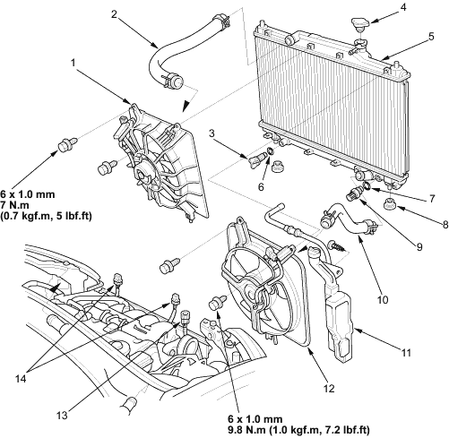

|
- RADIATOR FAN ASSEMBLY
- UPPER RADIATOR HOSE
- DRAIN PLUG
- RADIATOR CAP
- RADIATOR
- O-RING,
Replace
- O-RING
Replace
- LOWER CUSHION
- RADIATOR FAN SWITCH
24 Nm (2.4 kgf/m, 17 lbf/ft)
- LOWER RADIATOR HOSE
- RESERVE TANK
- A/C CONDENSER FAN ASSEMBLY
- RADIATOR FAN SWITCH CONNECTOR
- FAN MOTOR CONNECTORS
|